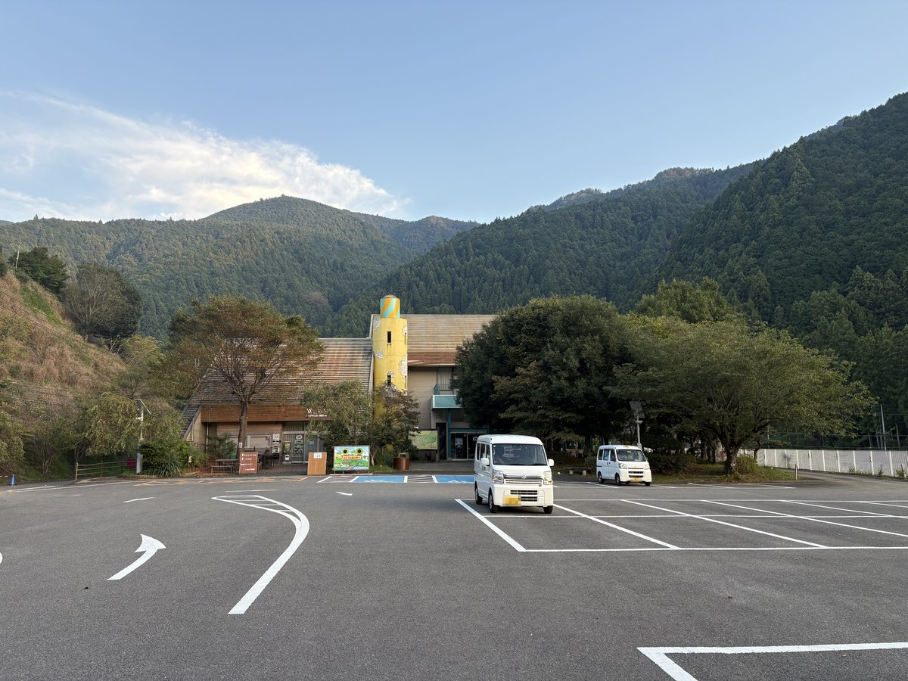

道の駅 しみず
和歌山県有田郡有田川町大字清水607
駐車場
あり（無料）
トイレ
あり（洋式）
ドッグラン
あり（有料） / 日帰りBBQ利用者向けのドッグランサイト（料金・利用条件は公式に記載なし）
入場料
無料
公式HP
was-aritagawa.com
掲載時点の料金です。最新の料金は公式サイトでご確認ください。
備考・犬連れでのポイント
有田川上流の山あいにある国道480号沿いの道の駅で、グランピング・BBQ・キャンプの施設「W.A.S. River side nature terrace」と一体になっている。
コテージ「星降るテラスコテージ（レ・アーリしみず）」や、犬と泊まれるグランピングドーム（各棟にドッグランスペース）があり、入口の看板には「グランピング・BBQがわんちゃんと一緒にできる」とある。
公式のメニューには「日帰りBBQドッグランサイト」があるが料金や利用条件は書かれておらず、誰でも立ち寄って使える無料のドッグランは公式に記載が無い。
2026年9月の訪問時も見当たらなかった。あらぎ島展望所から車で数分の距離。
駐車場は普通車108台・大型4台で無料、トイレと駐車場は24時間利用可。
物産館の営業時間は公式サイトが9:00〜18:00・火曜定休とする一方、国土交通省の道の駅案内は10:00〜17:00・水木定休（10〜11月は土日祝のみ、12〜3月は冬期休館）としており食い違う。
2026年9月の木曜夕方の訪問時は建物がすべて閉まっていたため、立ち寄る場合は事前確認推奨。